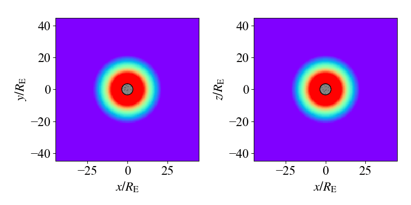

Geomagnetosphere 3D
地球磁気圏に太陽風が吹き付け、地球磁気圏が変形する様子をシミュレーションします。[Ogino, 1986]を参考にして、地球の中心から地球半径の3.5倍の位置にも境界を設置し、地球の双極子磁場とスムーズに接続するようにしています。
Location
problems/geomagnetosphere_3d/
Normalization
物理量は以下の代表値で規格化しています。[Ogino, 1986]ではMKS単位系が使われていますが、本シミュレーションではcgs単位系を使用していることに注意してください。
Quantity |
Symbol |
Value |
Note |
|---|---|---|---|
Length |
\(R_\mathrm{e}\) |
\(6.371 \times 10^8~\rm{cm}\) |
Earth radius |
Magnetic Field |
\(B_\mathrm{s}\) |
\(3.12 \times 10^{-1}~\rm{G}\) |
Strength at earth equator surface |
Density |
\(\rho_\mathrm{s}\) |
\(1.67 \times 10^{-20}~\mathrm{g~cm^{-3}}\) |
Typical density of ionosphere |
Then the other quantities are normalized as follows.
Quantity |
Symbol |
Value |
|---|---|---|
Velocity |
\(V_\mathrm{s}\) |
\(B_{\rm{s}}/\sqrt{4\pi \rho_{\rm{s}}}=6.81\times 10^8~\rm{cm~s^{-1}}\) |
time |
\(t_\mathrm{s}\) |
\(R_{\rm{e}}/V_{\rm{s}}=0.935~\rm{s}\) |
Pressure |
\(p_\mathrm{s}\) |
\(B_{\rm{s}}^2/4\pi=7.74\times 10^{-3}~\rm{dyn~cm^{-2}}\) |
Geometry
\(-44.8 \leq x \leq 44.8\)
\(-44.8 \leq y \leq 44.8\)
\(-44.8 \leq z \leq 44.8\)
Force
地球の中心に向かう重力を考慮します。force.hppでは以下のように設定します。
where \(g_0=1.35\times10^{-6}\) in normalized unit.
namespace force {
constexpr Real g_grav = 1.35e-6; // gravitational acceleration (simulation units)
}
...
DEVICE inline Real x(MHDCoreType &qq, int i, int j, int k) {
return -qq.ro[grid.idx(i, j, k)] * force::g_grav * grid.x[i] /
util::pow3(std::sqrt(grid.x[i] * grid.x[i] + grid.y[j] * grid.y[j] +
grid.z[k] * grid.z[k]));
}
DEVICE inline Real y(MHDCoreType &qq, int i, int j, int k) {
return -qq.ro[grid.idx(i, j, k)] * force::g_grav * grid.y[j] /
util::pow3(std::sqrt(grid.x[i] * grid.x[i] + grid.y[j] * grid.y[j] +
grid.z[k] * grid.z[k]));
}
DEVICE inline Real z(MHDCoreType &qq, int i, int j, int k) {
return -qq.ro[grid.idx(i, j, k)] * force::g_grav * grid.z[k] /
util::pow3(std::sqrt(grid.x[i] * grid.x[i] + grid.y[j] * grid.y[j] +
grid.z[k] * grid.z[k]));
Initial Conditions
初期条件は、磁気圏と太陽風の組み合わせで記述されます。比熱比は\(\gamma = 5/3\)とします。
密度
圧力
双極子磁場
ここで\(p_0 = 5.4\times10^{-7}\)。 太陽風のパラメータは、\(\rho_\mathrm{sw}=5\times10^{-4}\)、\(p_\mathrm{sw}=3.56\times10^{-8}\)、\(v_\mathrm{sw}=0.05\)、\(B_\mathrm{sw}=-1.5\times10^{-4}\)です。
Boundary Conditions
すべての境界に対して、\(x = -44.8\)境界を除き、全ての物理量に対して対称境界条件を設定します。\(x = -44.8\)境界では、上記の太陽風のパラメータを固定境界条件として設定します。config.yamlでは以下のように設定します。加えて、地球周辺(\(r = 3.5R_\mathrm{E}\))に境界のような条件を設定し、双極子磁場とスムーズに接続するようにしています。
Results
用意されたpythonプログラム geomagnetosphere_3d.py を実行することにより、結果のプロットは py/problems/figs/geomagnetosphere_3d/ に保存されます。
cd py/problems/
python geomagnetosphere_3d.py
